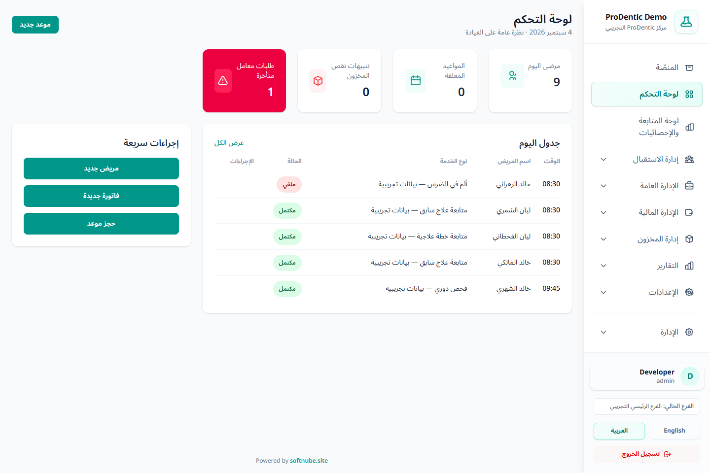
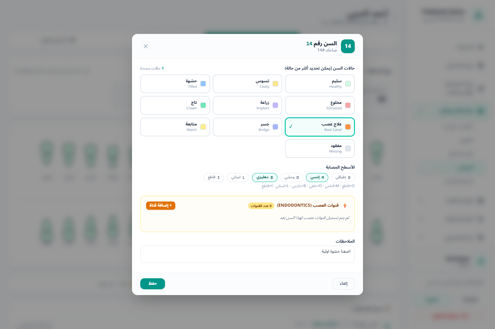

مصمم ليوم العيادة الحقيقي
كل قرار أوضح.
كل قرار أوضح.
كل خطوة مترابطة.
يدير ProDentic رحلة المريض من الحجز والفحص إلى الخطة والمعمل والتحصيل، ويضع التشغيل والمالية في سياق واحد يفهمه الفريق.
واجهة عربية واضحة
صلاحيات حسب الدور
تصدير PDF وExcel

✓واجهة فعلية ببيانات عرض اصطناعية
سير عمل واحد
رحلة المريض لا تتوقف بين شاشة وأخرى
كل مرحلة تكمل السابقة، فتظهر المعلومة في مكانها دون إعادة إدخال أو بحث متكرر.
تسجيل المريض
ملف موحد للبيانات والسجل الطبي والمرفقات.
تنظيم الموعد
تقويم وحالات حضور وقائمة انتظار واضحة.
الفحص السريري
مخطط أسنان متعدد الحالات والأسطح والعصب.
خطة العلاج
خدمات وجلسات وطبيب وغرفة وتقدم قابل للمتابعة.
التنفيذ والتحصيل
معمل وفواتير وأقساط ودفعات جزئية أو كاملة.
التحليل والمتابعة
مؤشرات وتقارير مالية وتشغيلية قابلة للتصفية.
تحديثات عملية
مزايا جديدة مبنية حول التفاصيل التي تحدث كل يوم
تحديثات تربط العمل السريري بالتحصيل والمتابعة بدل أن تضيف شاشات منفصلة فقط.
اقرأ أداء العيادة من شاشة واحدة
مؤشرات المرضى والزيارات والإيرادات والمصروفات والذمم والمخزون، مع فلاتر زمنية تساعدك على الانتقال من الرقم إلى التفاصيل.
متابعة من الطلب إلى التسليم
اربط الطلب بالمريض والخطة والمورّد، وسجّل الحالة والتكلفة والموعد المتوقع والتنبيهات المتأخرة.
جدولة مرنة واستحقاقات واضحة
أنشئ جدولًا تلقائيًا أو مخصصًا، وحصّل دفعة كاملة أو جزئية مع متابعة المتأخر والمتبقي.
حالات متعددة وقنوات عصب
سجّل أكثر من حالة للسن، الأسطح المتأثرة، وقنوات العصب مع الطول والمقاس والملاحظات.
الدفعة تعرف البنود التي غطتها
توزيع الدفعات على بنود الفاتورة، حالات سداد دقيقة، وتقارير إيراد وعمولات مبنية على التنفيذ والتحصيل.
انتقال منظم عبر Excel
قوالب للمرضى والأرصدة والخدمات والمخزون والمواعيد، مع معاينة الأخطاء قبل اعتماد الاستيراد.

01 · رعاية سريرية
سجل سريري يشرح الحالة، لا يكتفي بلون على السن
يمنح مخطط الأسنان الطبيب مساحة منظمة لتوثيق التشخيص والأسطح والعصب والملاحظات، مع تاريخ للتغييرات يسهّل الرجوع إلى ما حدث.
- مخططا بالغ وطفل بترقيم FDI.
- أكثر من حالة نشطة للسن الواحد.
- حتى عشر قنوات عصب مع تفاصيل كل قناة.

02 · تنسيق العمل
طلبات المعمل مرتبطة بالخطة وليست ملاحظات متناثرة
أنشئ الطلب من سياق الخطة العلاجية، حدّد المختبر والعمل المطلوب والتكلفة، ثم تابع مراحل الطلب حتى الاستلام والتسليم للمريض.
- حالات واضحة: مطلوب، قيد التنفيذ، جاهز، مستلم ومسلّم.
- تنبيه للطلبات المتأخرة في لوحة التحكم.
- تفاصيل قابلة للطباعة وسجل زمني للحالة.

03 · تحصيل منظم
خطة الدفع تسير بجانب خطة العلاج
حوّل الرصيد المتبقي إلى مواعيد استحقاق مفهومة للمريض والاستقبال، واحتفظ بتاريخ كل تحصيل بدل متابعة الأقساط خارج النظام.
- توزيع تلقائي أو مبالغ وتواريخ مخصصة.
- دفعات جزئية وكاملة مع تحديث الحالة مباشرة.
- فلترة حسب المريض والطبيب والاستحقاق والحالة.

04 · قرار مبني على البيانات
ابدأ بالسؤال ثم انتقل إلى التفاصيل التي تجيبه
تعرض لوحة المتابعة الصورة العامة، بينما تمنحك التقارير فلاتر متعددة للأطباء والمرضى والخدمات وطريقة الدفع مع تصدير جاهز للمشاركة.
- مقارنة الإيرادات والمصروفات وصافي الأداء.
- تفاصيل التحصيل والذمم والمدفوعات اليومية.
- تقارير PDF وExcel تحافظ على الفلاتر المختارة.
نظام متكامل
كل ما يحتاجه الفريق، دون فقدان سياق المريض
تُعرض الأدوات بحسب صلاحيات المستخدم حتى تبقى الواجهة مركزة على عمله.
ملف المريض
بيانات وسجل طبي ومرفقات وخطط وفواتير ومدفوعات في ملف واحد.
المواعيد والتقويم
حجز وتعديل وحالات حضور وتصفية حسب الطبيب والغرفة والتاريخ.
قائمة الانتظار
تسجيل الدور واستدعاء المريض وعرض شاشة انتظار مناسبة للاستقبال.
مخطط الأسنان
حالات وأسـطح وعصب وملاحظات وسجل تغييرات للبالغ والطفل.
الخطط والجلسات
خدمات وتكاليف وأطباء وغرف وجلسات ونسبة إنجاز موثقة.
طلبات المعمل
طلب مرتبط بالخطة مع المورّد والتكلفة والموعد والحالة.
الفواتير والمدفوعات
بنود وخصومات ومدفوعات متعددة وتوزيع دقيق على الخدمات.
أقساط العلاج
جداول استحقاق ودفعات جزئية وتنبيهات للمتأخر والمتبقي.
التقارير المالية
دخل وتحصيل ومصروف وعمولات مع فلاتر متعددة وتصدير.
المخزون
أصناف وموردون وتوريد وصرف وحركات وتنبيهات حد إعادة الطلب.
الفريق والموارد
أطباء وموظفون وغرف وملفات تشغيلية ومالية مرتبطة.
الصلاحيات والمراجعة
أدوار دقيقة وسجل للعمليات الحساسة وإعدادات يمكن التحكم بها.
باقات الاشتراك
باقات تناسب طريقة عمل عيادتك
اختر المستوى الأقرب لاحتياجك، ثم أرسل تفاصيل العيادة لنجهّز عرضًا مناسبًا بدل عرض عام.
للبداية المنظمة
العمليات اليومية الأساسية لفريق يريد جمع ملف المريض والمواعيد والعلاج والتحصيل.
- ملفات المرضى والسجل الطبي
- المواعيد والتقويم
- مخطط الأسنان والخطط العلاجية
- الفواتير والمدفوعات الأساسية
لتشغيل أكثر ترابطًا
تضيف المتابعة التشغيلية والمالية التي يحتاجها الفريق مع اتساع تفاصيل العمل.
- كل ما في الخيار الأساسي
- الأقساط وطلبات المعمل
- المخزون والموردون والطلبات
- التقارير والصلاحيات وسجل المراجعة
للرقابة والقرار
أدوات أعمق للقياس والتحليل والسياسات المالية وإدارة التفاصيل بكفاءة أعلى.
- كل ما في الخيار المتوسط
- لوحة المتابعة والإحصائيات
- المالية المتقدمة وسياسات العمولات
- ترحيل البيانات والتقارير الموسعة
رسالة جاهزة وواضحة
أدخل تفاصيل العيادة قبل الانتقال إلى واتساب
سنضع اسم العيادة وعدد الأطباء والغرف والخيار المطلوب وأولوية العمل داخل الرسالة تلقائيًا.
جولة تفاعلية
شاهد الواجهة الفعلية قبل أن تقرر
الصور مأخوذة من بيئة العرض ببيانات اصطناعية، لذلك ترى الشاشات وهي تعمل وليست نماذج تصميم.
تحكم بدون تعقيد
المعلومة تصل لمن يحتاجها، بالقدر الذي يحتاجه
الصلاحيات وسجل المراجعة وضوابط العمليات المالية تساعد الفريق على العمل بسرعة، مع بقاء القرارات الحساسة قابلة للتتبع.
قبل أن تبدأ
أسئلة شائعة
إجابات مباشرة على ما يحتاجه فريق العيادة عند تقييم النظام.
هل الصور المعروضة من النظام الفعلي؟
نعم. الصور من بيئة ProDentic التجريبية وتستخدم أسماء وأرقامًا اصطناعية مخصصة للعرض، وقد تتغير الأعداد مع تحديث بيانات الديمو.
هل يمكن تخصيص ما يراه كل مستخدم؟
نعم. يعتمد الوصول إلى الشاشات والعمليات على الأدوار والصلاحيات، ويمكن منح الفريق ما يحتاجه دون فتح وظائف غير مرتبطة بعمله.
هل يدعم النظام الدفعات الجزئية والأقساط؟
نعم. يمكن تسجيل دفعات جزئية أو كاملة، كما يمكن إنشاء جدول أقساط تلقائي أو مخصص للخطة العلاجية ومتابعة المستحق والمتأخر.
كيف تُتابع أعمال معامل الأسنان؟
يرتبط طلب المعمل بالمريض والخطة العلاجية والمورّد، مع حالات متابعة وتكلفة وموعد متوقع وتنبيه للطلبات المتأخرة.
هل يمكن استيراد بيانات سابقة؟
تتوفر قوالب Excel لعدة أنواع من البيانات مع خطوة تحقق ومعاينة للأخطاء قبل اعتماد الاستيراد. يُفضّل تنفيذ الانتقال ضمن خطة واضحة ونسخة احتياطية.
هل التقارير قابلة للتصدير؟
نعم. يمكن تصفية التقارير المالية والتشغيلية ثم تصدير النتائج بصيغة PDF أو Excel وفق الصلاحيات.
شاهد ProDentic على سيناريو يشبه يوم عيادتك
أخبرنا بعدد الأطباء وأول عملية تريد تنظيمها، وسنبدأ العرض من هناك.